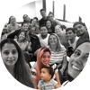

Minha trajetória
Sou enfermeira no Hemorio e estudante de Análise e Desenvolvimento de Sistemas pela UVA.
Minha trajetória foi construída em ambientes de alta responsabilidade, onde aprendi a liderar equipes, organizar processos e tomar decisões com rapidez e cuidado.
Conciliei formação, trabalho e maternidade, o que fortaleceu minha disciplina, resiliência e senso de prioridade.
Minha motivação e contribuição para a Globo
Me impulsiona aprender, entender problemas reais e transformar necessidades em soluções úteis. Foi isso que me aproximou da tecnologia.
Vejo a Globo como uma empresa com uma conexão profunda com a sociedade brasileira, capaz de influenciar, informar e entreter milhões de pessoas.
Me identifico com ambientes diversos, colaborativos e em constante evolução.
Conexão da minha trajetória com a nova área
Meu interesse por desenvolvimento vem da curiosidade e da vontade de construir soluções escaláveis.
Hoje fortaleço minha base técnica com estudos e projetos práticos. Pela minha vivência profissional, posso contribuir com organização, comunicação clara, responsabilidade com a entrega e olhar atento para o usuário.
Na prática, me imagino ajudando o time a entender necessidades, aprender rápido com o contexto da área e evoluir soluções confiáveis e úteis para os clientes.
Linha do tempo

2019 Graduação Enfermagem